The X Window System is the standard GUI for all UNIX platforms, and this
includes Linux. Unlike Windows and MacOS, in Linux and Unix the GUI is
separate from the main operating system kernel. This adds stability to the
system: if the GUI crashes, it doesn't take out the entire system.
One problem with X is that it has traditionally been very hard to configure
for a system. However, Slackware 7 introduced a configure-less X setup
that uses the framebuffer driver. This means that you don't have to go
through the procedures described in the section called xf86config and
the section called XF86Setup. The framebuffer will also work on any
VESA 2.0-compliant video cards. This means that just about any modern video
card will work under X. However, the framebuffer is noticeably slower than
using an X configuration tailored to your system.
If you choose to use the framebuffer server, you should install the
xxfb.tgz package from the X software series. You should
also choose one of the console resolutions during the configuration section
of the installer. The recommended option for X is probably best for most
people.
If you choose to configure X for your system, you'll need to follow the
instructions in the section called xf86config or the section called XF86Setup.
The first section describes using xf86config(1), a
commandline-based program for configuring X. The second section describes
XF86Setup(1), a graphical version of the configuration
program.
xf86config is one of two programs that can be used to
configure X on your system. The basic idea is simple: you will be presented
with a series of questions and multiple choice answers. Choose the answer
that best fits your system. After proceeding through the entire program, the
/etc/XF86Config(5) file will be written and you will be
ready to use X. If you mess up at some point, you'll have to kill the program
using control-c and start over from the beginning.
It helps to know as much as possible about your monitor and video card
before using xf86config. You can get information about your
video card using the SuperProbe program:
# SuperProbe
This will give you a warning about possibly locking up the system. If this
scares you off, quit using control-c before the five
second time limit is up. Otherwise, you'll get some information about your
video setup:
First video: Super-VGA
Chipset: ATI 264GT3 (3D Rage Pro) (Port Probed)
Memory: 4096 Kbytes
RAMDAC: ATI Mach64 integrated 15/16/24/32-bit
DAC w/ clock
(with 8-bit wide lookup tables)
(programmable for 6/8-bit wide lookup tables)
Attached graphics coprocessor:
Chipset: ATI Mach64
Memory: 4096 Kbytes
That's what the information for an ATI Rage Pro video card looks like. Write
down the information for you card, or switch over to another virtual terminal
(using the alt-function key combinations) and run
xf86config
from there. You'll need your video card's information later.
xf86config must be run as root, since it will be writing
files and making symbolic links in places only root is allowed to:
# xf86config
Once you start xf86config, it will present a screen full of
text telling you what it is going to do. Remember, there is no way to go back
to the previous screen if you make a mistake, so pick carefully. Otherwise,
you might have to do this a few times. Press enter,
like it prompts you to do.
Mouse protocol
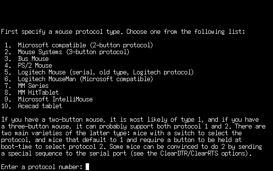
Choose the kind of mouse you have from the list. These days, most mice will
be PS/2 or a Microsoft Intellimouse. Older mice will probably require one of
the other types listed.
Emulate3Buttons
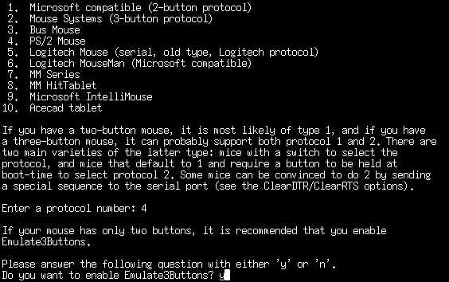
If your mouse has only two buttons on it, you can choose to emulate a third
button. Clicking both the left and right mouse buttons at the same time
will be interpreted as a third button click. As many programs will make
use of a third button, enabling it is recommended. If you have a three
button mouse, this won't do anything.
Mouse device name
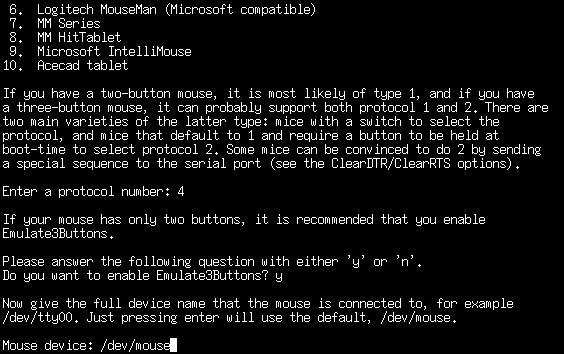
The default of /dev/mouse is usually acceptable. However,
if you have your mouse plugged into some strange port, you might need to change
this. For most serial mice and PS/2 mice, the default is fine.
XKEYBOARD extension
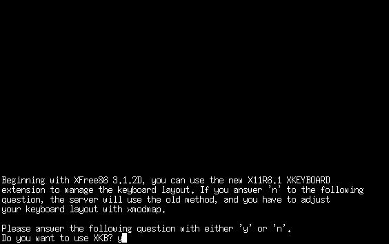
You will probably want to use the X keyboard extensions. Not choosing this
will cause some strange behavior with the backspace and delete keys. Choosing
the keyboard extensions will cause keys to behave like they should.
Bindings for alt keys
If you want to enter characters from different languages, you should enable
the bindings for alt keys. If you're only going to be typing in English,
you don't need to enable these bindings.
Horizontal sync range
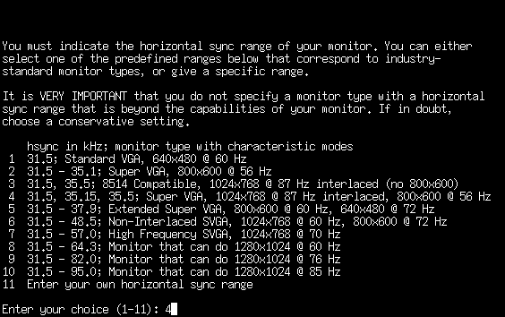
This is the first of the questions relating to the monitor. It is important
that you choose wisely here. Don't pick a range that is outside of your
monitor's specifications. This is less important on newer monitors, as they
will not attempt to do something outside of their specifications. Older
monitors might be damaged, though. When in doubt, pick a conservative
range.
Having your monitor's documentation would be a good reference for these next
few questions. For most newer monitors, you can probably pick 31.5-48.5 or
31.5-57.0. Those of you will high-end monitors can choose one of the larger
ranges. Or, you can enter your own horizontal sync range if you don't see one
that fits quite right.
Vertical sync range
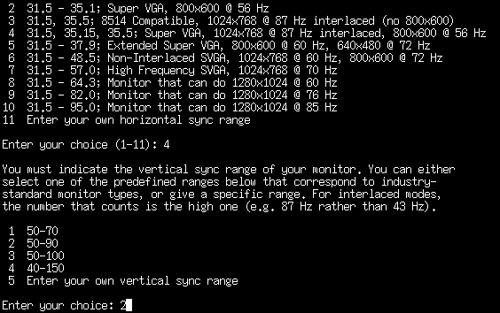
Once again, you'll need to know the specifications of your monitor to answer
this question. When in doubt, go for a narrow range. A safe choice would
probably be 50-90 or 50-100. If you don't see one that fits your monitor, you
can choose to enter your own range.
Identification strings
You are now presented with three questions asking for identification strings
for your monitor. These are not terribly important. You can just hit enter
for all three of them if you'd like. Or, you can name them with whatever
you want. These strings will be used in the configuration file for
identification purposes.
Video card database
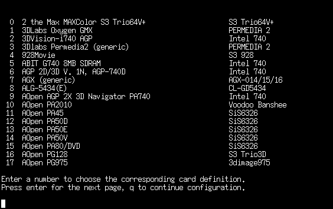
The next large section of configuring X deals with your video card. Your
card's documentation and the information from SuperProbe
will both prove handy right now. You will want to look through the card
database to pick out your card, so answer “y” to the question.
Just hitting enter will take you past the card database and into the next
section.
There are over 800 cards in the database. The left column contains a number
for each card and the card's name. The right column contains the chipset
for that card. Keep hitting enter until you find your video card in the list.
When you've found your card, enter the number and hit enter. If you don't
know what kind of video card you have, there are a few options. First, you
could look at the “Chipset” line from
SuperProbe and look for a card matching that chipset in the
database. Or, you could use a generic SVGA card type. Many cards that do not
have their own server are supported by the SVGA server, so this could be a safe
choice.
After picking a card, it will give you some more information. Following the
ATI Rage Pro example from above, it would give this kind of information:
Your selected card definition:
Identifier: ATI Mach64
Chipset: ATI-Mach64
Server: XF86_Mach64
Do NOT probe clocks or use any Clocks line.
At this point, you should check to make sure that you installed the server
package. The XF86_Mach64 server is in the xma64.tgz
package. Make sure that the correct server package is installed, or X will
not be able to run.
Which server to run?
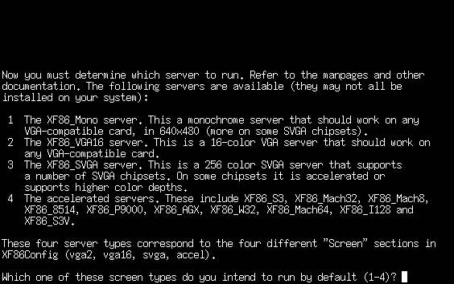
This next question presents several servers that you can use. If you've
selected your video card correctly, you can safely hit Enter. That will tell
X to use the server that the card specified. Otherwise, you can pick to use
the Mono server, VGA16 server, SVGA server, or an accelerated server. The best
choice is to use the server that the card specified.
Setting the symbolic link
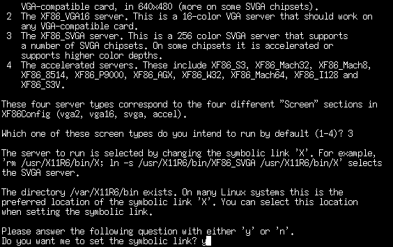
Select “y” for setting the symbolic link. This will set up a
link to the appropriate X server.
Video memory
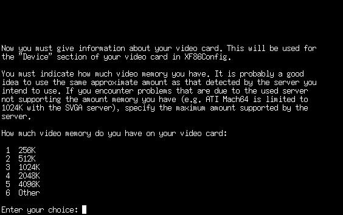
Select the amount of memory that your card has. SuperProbe
can be used to give this information as well. If you've got something other
than one of the choices, you can select “Other” and enter in a
different amount. Make sure that you specify the amount of memory in
kilobytes.
Identification strings
You'll be prompted to enter three more identification strings. These
apply to your video card. As with the monitor strings, it is safe to hit
enter for all three, unless you'd like to name your video card.
RAMDAC
You'll only need to choose a RAMDAC setting if you're using the S3, AGX, or
W32 servers. SuperProbe will tell you what kind of RAMDAC
chip is present on your video card. Go through the list until you've found the
correct chip, then enter the corresponding number. If you're not using the S3,
AGX, or W32 servers, enter a “q” to continue without selecting a
RAMDAC.
Clockchip setting
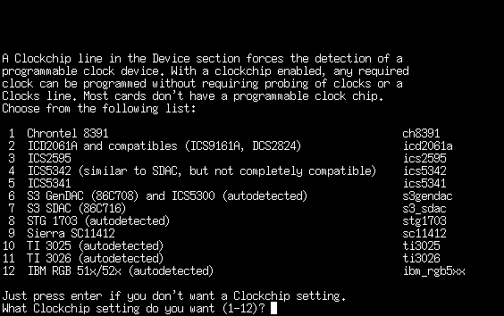
If your card has a programmable clockchip, you'll want to select one from
this next listing. Keep in mind that most cards do not have a programmable
clockchip, so you should be safe by just hitting enter.
SuperProbe should report if your card has a clockchip.
Clocks line
The next screenful of text talks about what a clocks line is. As it
explains, you won't want one on most modern configurations. It will then
prompt you, asking if it should probe for a clock. It will also tell you
if the card needs to be probed or not. In the case of the ATI card,
xf86config would say:
The card definition says to NOT probe clocks.
If it says something like that, choose “n” to the question of
probing the card for clocks. Very old graphics cards will need to be probed.
xf86config will tell you what needs to be done.
Video modes
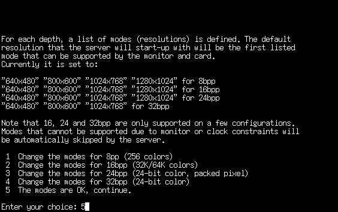
Now it's time to select the video modes that your X server will use. You
will see four different color depths - 8bpp, 16bpp, 24bpp, and 32bpp. Each
will have a listing of the various video modes that can be run at that
color depth. When you start up X, it will enter a default color depth and
run at the first resolution listed for that color depth. If you'd like
X to start up in a different resolution by default, now is the time to do
that.
If the ordering of the video modes is fine, you can select “OK”,
which will continue on with the configuration process. Otherwise, select the
color depth that you'd like to change. For example, suppose you were presented
with the following choices:
"640x480" "800x600" "1024x768" "1280x1024" for 8bpp
"640x480" "800x600" "1024x768" "1280x1024" for 16bpp
"640x480" "800x600" "1024x768" "1280x1024" for 24bpp
"640x480" "800x600" "1024x768" for 32bpp
If you'd like X to start up in a different resolution by default, you would
first select a color depth to change. Then you would follow the directions
given by xf86config. It will prompt you to enter the
digits that correspond to the order of the resolutions. If you simply wanted
to reverse the order of the resolutions, you could answer like so:
Which modes? 5432
This also allows you to delete resolutions. If your video card cannot run
at 1280x1024, there's no reason to have it try. You could remove that line
by answering with the following digits:
Which modes? 432
After selecting your modes at that color depth, you will be asked if you'd
like a virtual screen that is bigger than the physical screen. A virtual
screen is a screen that is bigger than the actual monitor. When you move
the mouse around on the virtual screen, it will scroll a bit before coming
to the edge. This allows you to fit more windows onto your monitor. However,
because you will not be able to see everything at once, the virtual screen
can be a bit annoying. It is still an interesting thing to play with,
so you might want to try it out.
Then you'll be sent back to the list of video modes. After altering the
video modes for the 24bpp color depth, it would look like this:
"640x480" "800x600" "1024x768" "1280x1024" for 8bpp
"640x480" "800x600" "1024x768" "1280x1024" for 16bpp
"1280x1024" "1024x768" "800x600" "640x480" for 24bpp
"640x480" "800x600" "1024x768" for 32bpp
Continue altering the video modes until you are satisfied with them. When
you're done with this section, select “OK” to continue on.
Write the config file
At this point, configuration of X is complete. xf86config
will ask if it should write the config file to
/etc/XF86Config. If you'd like to be able to run X, you
should answer “y” to that question, as that is where X will look
for its configuration file.
Assuming that you answered all the questions correctly and have the X server
package installed, you should now be able to start up X as follows:
$ startx
If you've installed KDE or GNOME, it should come up at this time. Otherwise,
you might want to run xwmconfig and select the window
manager that you want to use by default. Window managers will be
described later on in this chapter. xwmconfig sets up the
default window manager only for the user who runs it. If you have several
users on your system, each will need to select their own window manager.
There are a few special keystrokes that might come in handy when using X.
If you need to quit X at some point and you cannot close it down properly,
there is a force-quit combination.
control-alt-backspace will kill X and dump you back to
a command line. You can switch back to the command line terminals while
running X by pressing control-alt-function key, which
is similar to switching virtual terminals at the console. The X session is
located on terminal 7, so you can get back into X with
alt-F7. Finally, you can change video modes while
running X. control-alt-numeric keypad + will switch
to the next highest resolution, while
control-alt-numeric keypad - will switch to the next
lowest resolution.